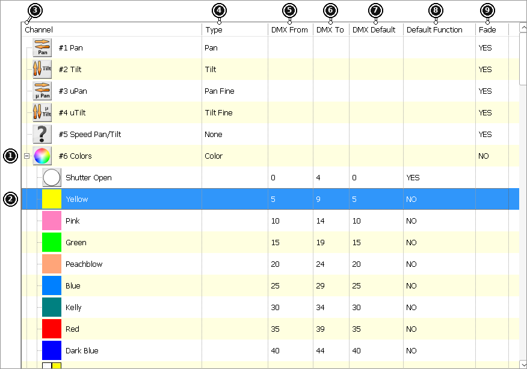
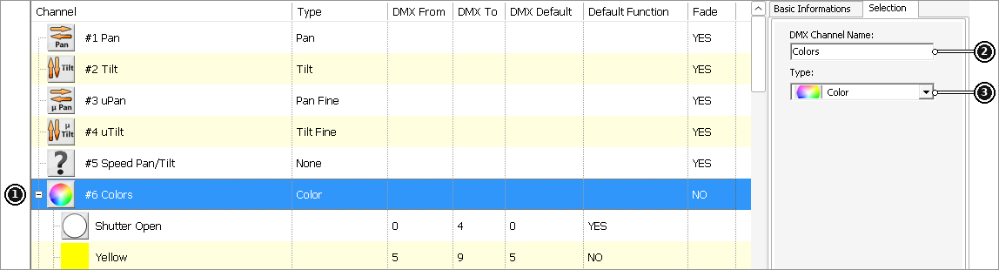
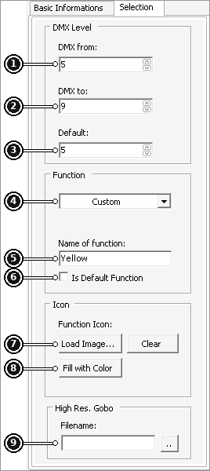

For: Full
A profile is a list of channels, in the order the fixture uses them: the first one is at the fixture's DMX address, the second one at the address + 1, and so on. A channel can have presets: DMX ranges with a name and a picture (white, yellow, gobo 3, strobe ...).

| 1 | A channel - its number (#6 = the 6th channel), its name, the picture of its type. [-] in front: its presets are shown under it. |
| 2 | A preset of that channel (here selected) - its picture and its name. |
| 3 | Channel - the names. |
| 4 | Type - the type of the channel (the table below). |
| 5 | DMX From - where the range of the preset starts. |
| 6 | DMX To - where it ends. |
| 7 | DMX Default - the value sent when this preset is chosen. |
| 8 | Default Function - YES for the preset of the channel that is its default. |
| 9 | Fade - YES: the channel moves smoothly from one value to the next; NO: it jumps (see Fade below). |
A click on a channel shows its page in Selection.

| 1 | The channel selected in the list. |
| 2 | DMX Channel Name - its name: the one the Remake shows in the mixer. |
| 3 | Type - what the channel does. The type decides the picture of the channel, whether it may have presets and how the Remake and the 3D use it. |
| Type | Presets | Fade |
|---|---|---|
| Pan, Tilt, Pan Fine, Tilt Fine | no presets | YES |
| Dimmer | may have | YES |
| Cyan, Magenta, Yellow, Red, Green, Blue | no presets | YES |
| Shutter, Color, Color Rotation, Gobo, Gobo Rotation, Iris, Zoom, Frost, Focus, None | may have | YES without presets, NO with presets |
None is for the channels that are none of the others (speed, special functions, programs). A fixture has at most one Pan, one Tilt, one Pan Fine and one Tilt Fine, and Pan goes with Tilt; Test checks it.
The editor sets Fade by itself, from the type and the presets, as the table shows: a pan or a dimmer must move smoothly, but a colour wheel or a gobo wheel with presets must jump straight to the next slot, or it would show every colour or gobo between.
A click on a preset shows its page.

| 1 | DMX from - where the range starts (0-255). |
| 2 | DMX to - where it ends. |
| 3 | Default - the value sent for this preset; it stays between From and To. |
| 4 | Function - Custom (a name and a picture of your own), Gobo... (choose a picture file: it becomes the picture, its name the name, and the file the gobo of the preset), or one of the standard functions below, which gives the preset its name and its picture. |
| 5 | Name of function - the name of the preset. |
| 6 | Is Default Function - this preset is the default of the channel. Only one preset of a channel can be; without a tick, the first preset is. |
| 7 | Load Image... / Clear - the picture of the preset (32 x 32). See Fixture information and pictures. |
| 8 | Fill with Color - the picture made of one colour, for the slots of a colour wheel. |
| 9 | High Res. Gobo - the picture file of the gobo, for the 3D. |
Gobo Shake, Dimmer, Lamp off, Lamp on, Indexing, Left Loop, Stop loop, Right loop, Shutter Closed, Shutter Open, Strobe, Strobe off, Speed, Zoom. Each one has its own picture, which the Remake shows in the General Mixer when the channel is on that preset.
| To | Do |
|---|---|
| add a channel | Edit > New DMX Channel (Ctrl+D): a new channel at the end, selected. |
| add a preset | select the channel (or one of its presets), Edit > New Function Preset (Ctrl+P). |
| copy a channel | Edit > Copy Channel (Ctrl+C): the copy, with its presets and their pictures and gobos, goes at the end, selected. |
| delete | select the channel or the preset, Edit > Delete (Ctrl+Del). |
| change the order | Move Up / Move Down: the channel moves one place and stays selected, so you can press again. |
| cover the whole range 0-255 | select the channel, Edit > Fill undefined Areas (Shift+Ctrl+F): the editor says how many ranges no preset covers and, after Yes, adds an Undef preset for each of them. |
Tip: the order of the channels must be exactly the one of the fixture's manual, without gaps: a channel the fixture has but you do not need still gets its place (type None), otherwise every channel after it is one address off.